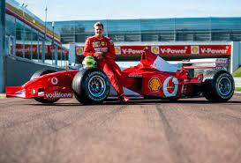
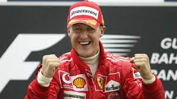
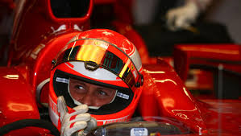

<html>
  <head>
    <meta charset="utf-8">
    <title>Michael Schumacher</title>
	<link rel="stylesheet" href="style/style.css">
  </head>
</html>

<h1>Michael Schumacher</h1>

<p>Michael Schumacher est un légende de la Formule 1 et du sport automobile en général.
 Avec un total de 7 titres, il est le pilote ayant remporté le plus de championnats du monde de Formule 1, maintenant égalé par Hamilton.
 « Schumi » a remporté au total 91 des 307 courses, ce qui fait de lui le 2ème pilote avec le plus de courses remportées, derrière Lewis Hamilton.

Schumacher obtient ses 2 premiers titres mondiaux avec Benetton en 1994 et 1995, avant de rejoindre Ferrari.
 Avec l’écurie italienne, il va d’abord connaître quelques années d’adaptation avant de régner sans partage sur le monde de la Formule 1 pendant 5 longues années.
 On peut dire sans hésiter que Michael Schumacher fait partie des meilleurs pilotes de Formule 1 de tous les temps. 
 Malheureusement Le 29 décembre 2013 , Michael Schumacher est victime d'un grave accident de ski à Méribel, en Savoie.
 Il souffre d'un traumatisme crânien avec coma qui nécessite une intervention neurochirurgicale immédiate ; son pronostic vital est engagé.</p>
 
 
  
  
  

  <body background="image/fondnoir.jpg">
  <background-attachment:center center;>